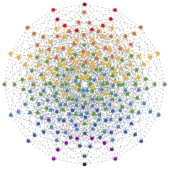
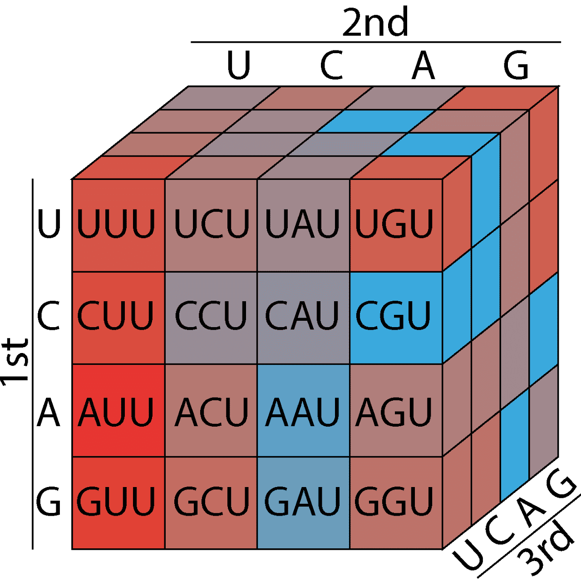
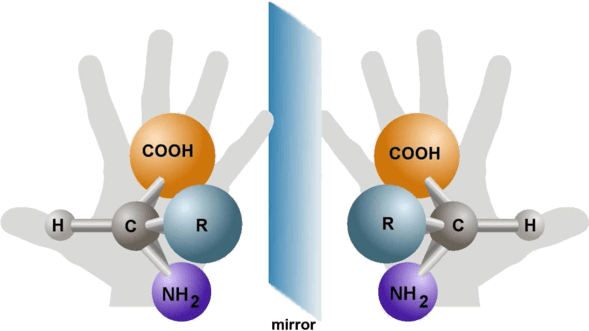
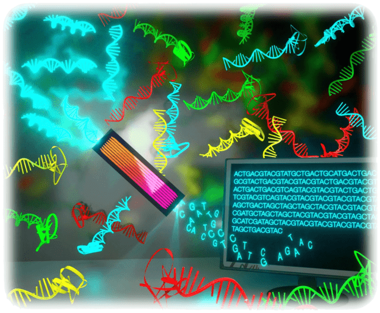
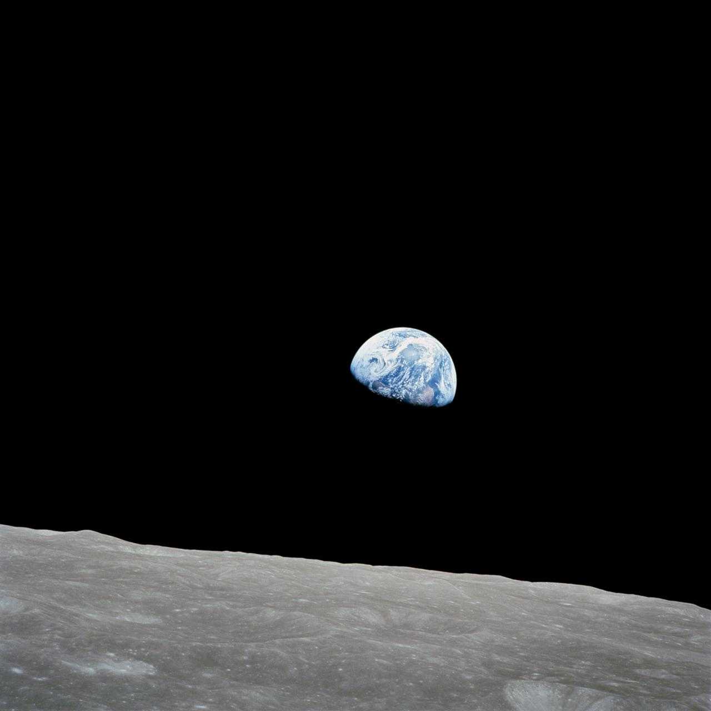

How did life emerge from non-living matter? This is the central question driving my research. I am fascinated by the transition from simple chemistry to the complex, self-sustaining systems we call life. My work explores how prebiotic environments could have given rise to biological complexity - from the formation of early informational molecules to the emergence of functional systems capable of evolution.
My current work investigates how shared environmental modulation can drive correlated behavior in uncoupled prebiotic systems, and how chemistry transitions from rule-taking to rule-making as complexity increases.
Check out our recent two-part collaboration with the Origins of Life Early-career Network (OoLEN), reviewing experimental and theoretical methods for studying the origins of life.

How do biological molecules evolve, and how did the genetic code come to be? I study these questions through the lens of fitness landscapes - the rugged terrain that evolution navigates as it searches for functional sequences. Using high-coverage sequencing data, I develop computational methods to visualize and analyze molecular fitness landscapes, revealing the paths and constraints that shape evolutionary outcomes.
My work on the genetic code explores how its earliest stages may have been shaped by pressures unrelated to protein translation. We recently showed that molecular complexity constrained early amino acid recruitment, with structurally simple amino acids occupying basal positions and complex residues appearing later. I have also studied evolutionarily independent protein-RNA complexes to evaluate prebiotic scenarios, and contributed to understanding the RNA World as a model for early life.

Why does life exclusively use left-handed amino acids and right-handed sugars? The emergence of this molecular homochirality remains one of the deepest mysteries in origin of life research. My doctoral work and early career were dedicated to understanding the fundamental mechanisms behind the onset, amplification, and transmission of chiral asymmetry at the molecular and supramolecular levels.
Through mathematical modeling and simulations, I have explored chiral polymerization, spontaneous mirror symmetry breaking, and mechanically induced homochirality, building a theoretical framework for how the symmetry of prebiotic chemistry could have been broken.
Read my PhD thesis: Models for chiral amplification in spontaneous mirror symmetry breaking.

I am passionate about applying mathematics, computation, and increasingly AI-driven approaches to understand biological systems. My work spans mathematical modeling of processes ranging from protocells to phage-bacteria interactions, development of bioinformatics pipelines, and exploration of modern machine learning techniques for biological data.
I develop open-source tools for the community, including EasyDIVER+ for processing high-throughput sequencing data from in vitro evolution experiments, ClusterBOSS for clustering biological sequences, and DeCatCounter for decatenation counting in sequencing data. More recently, I have been exploring how DNA tokenization can efficiently compress genomic information while preserving phylogenetic relationships - bridging bioinformatics with artificial intelligence.

My research sits at the heart of astrobiology - the study of life's origins, distribution, and future in the universe. I am interested in how our understanding of life on Earth can inform the search for life elsewhere, and how space exploration can in turn advance our knowledge of biology.
I have explored the connections between space settlement and astrobiology, investigating how these fields can mutually advance each other. In collaboration with Project Janus, I recently studied the long-term trajectory of technological civilizations. Our work on civilization collapse-recovery dynamics and detectability uses simulation modeling to explore how resource consumption and recovery rates shape the persistence of technospheres, with implications for both humanity's resilience and the search for extraterrestrial intelligence.